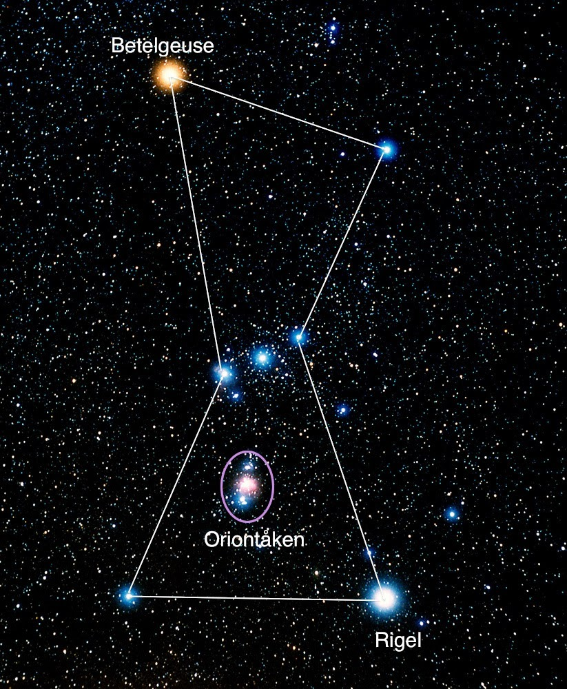
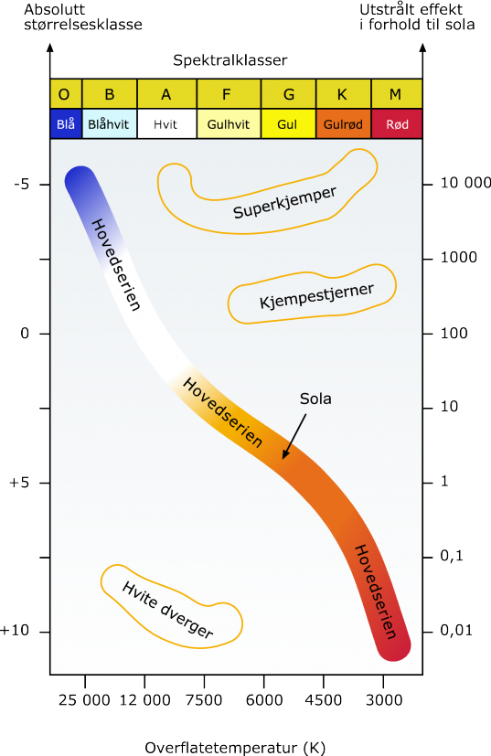

Fra fødsel til "overgangsalder" følger en stjerne fire trinn:

I hovedserien omdannes hydrogen til helium i stjernens sentralområdet. Dette skjer på følgende to forskjellige måter:
PP-kjeden kan skrives slik \(4^1_1\textrm{H} \rightarrow ^4_2\textrm{He} + 2\textrm{e}^{+} + 2\nu + \gamma\)